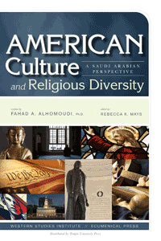

Chronicling the unique religious-based travels of a Muslim in America
Chronicling the unique religious-based travels of a Muslim in America


 Chronicling the unique religious-based travels of a Muslim in America
Chronicling the unique religious-based travels of a Muslim in America

|  |
American Culture and Religious DiversityA Saudi PerspectiveFahad Alhomoudi:paper EAN: 978-0-93121-413-4 (ISBN: 0-931214-13-0) |
Saudi professor of Islamic law Fahad Alhomoudi travelled through a portion of America, collecting first hand a range of religious and cultural experiences that were markedly different from his own. He visited the Pennsylvania Amish, where religious recluses still ride in horse-driven buggies, and he blew the ritual shofar with Reform Jews in their synagogues. He also met a variety of white, black, and brown Christians in their churches. And he learned of the Muslim experience in America. His encounters were at once personal, intense, and ultimately transformative.
In American Culture and Religious Diversity, Alhomoudi, a twenty-first century Alexis de Tocqueville of sorts, recounts his spiritual, emotional, and intellectual journeys. His fascinating book, full of reflections about the people he met and the experiences he shared, offers a dialogue between these hugely important—and hugely different—cultures. His perspective explores the intricacies of cultural exchange and religious difference with the hope of building good bridges for crossing and dwelling.
Dr. Fahad Alhomoudi is Vice-Dean of Academic Research at Al-Imam Muhammad Ibn Saud Islamic University in Riyadh, as well as a Fulbright scholar and professor of Islamic law and prophetic tradition.
© 2015 Temple University. All Rights Reserved. This page: http://www.temple.edu/tempress/titles/2191_reg.html.